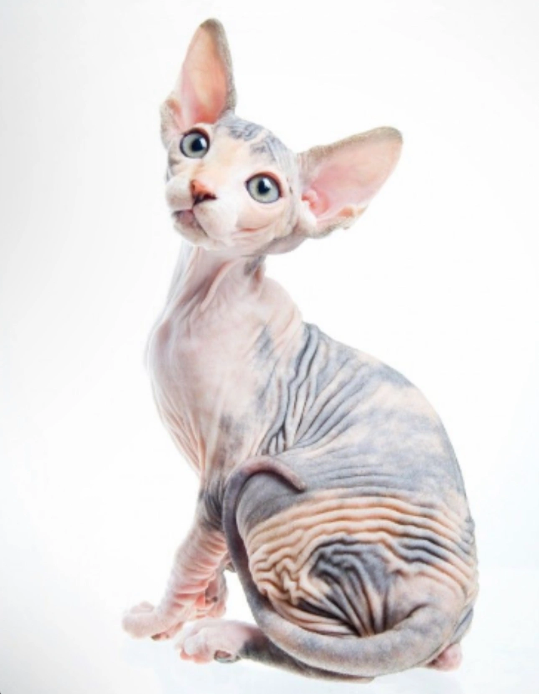
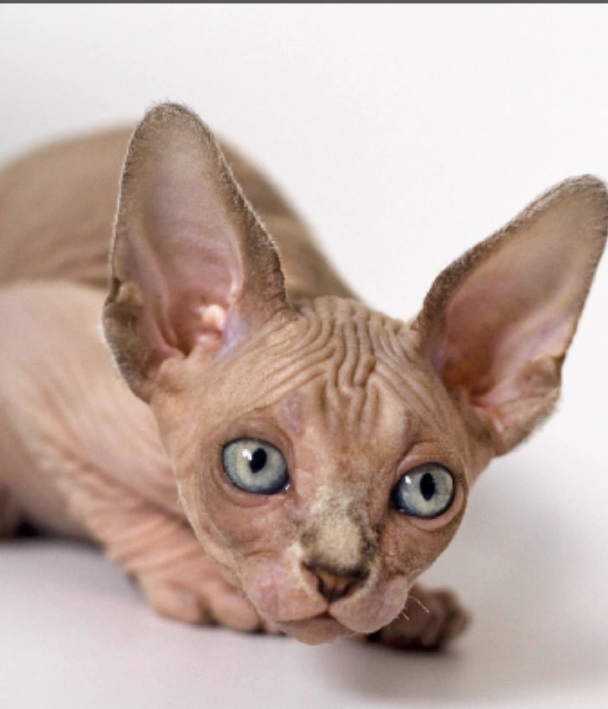
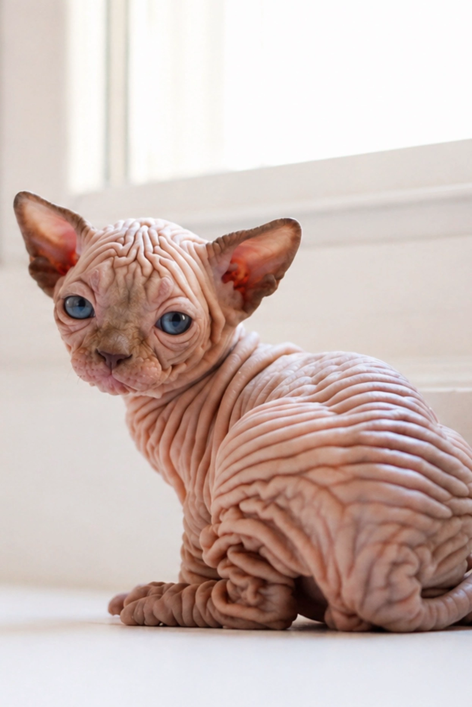
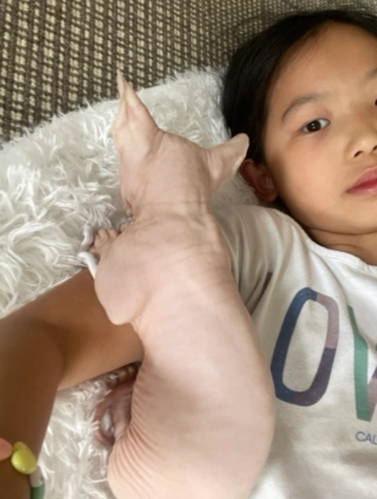
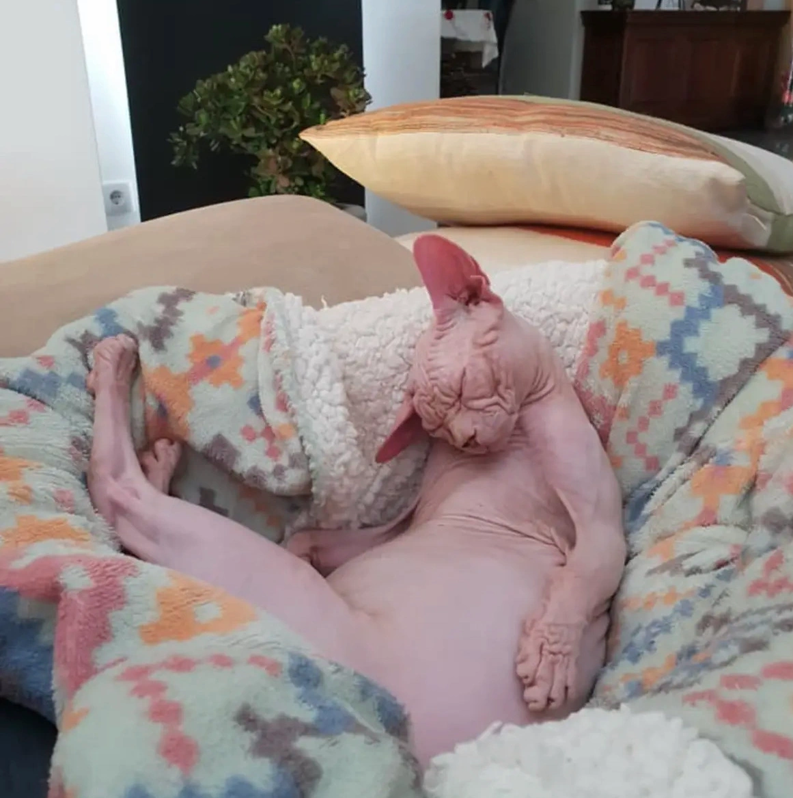

How to Choose a Reputable Sphynx Cat Breeder
Bringing home a Sphynx kitten is a long-term commitment. Learn how to identify responsible breeders who prioritize health, temperament, and ethical breeding practices.
Read More →With over 25 years of experience, we responsibly raise exceptional kittens with a focus on health, temperament, and world-class quality.
Years Experience
Health Checked
Lifetime Support



Every kitten is raised in our home with love, attention, and early socialization to ensure confident and affectionate personalities.
We specialize in premium Sphynx, Elf, and Bambino kittens bred for exceptional health, temperament, and beauty.




“Our Sphynx kitten adjusted immediately and has the sweetest personality. You can tell he was raised with love and care from day one.”

“The entire process was smooth and professional. Our kitten arrived healthy, affectionate, and incredibly social.”

“We were looking for an Elf kitten for months and finally found the perfect match. We still receive support whenever we have questions.”

“Our Bambino is playful, loving, and follows us everywhere. The experience exceeded our expectations.”

“Beautiful kittens and excellent communication. We felt comfortable throughout the entire process.”
Bringing home a Sphynx kitten is a long-term commitment. Learn how to identify responsible breeders who prioritize health, temperament, and ethical breeding practices.
Read More →Discover grooming, feeding, health, and lifestyle tips that help your Sphynx remain healthy and happy.
Read More →Learn why Sphynx cats are known for their affectionate, social, and playful personalities.
Read More →Many people believe Sphynx cats are completely hypoallergenic because they have little or no fur. While they produce less airborne hair than many breeds, they still produce the Fel d 1 protein found in saliva and skin oils that can trigger allergies.
Most owners bathe their Sphynx every one to two weeks...
Sphynx cats are famous for their affectionate personalities...
Prepare a warm sleeping area, litter box, scratching post...
Sphynx cats have a fast metabolism and often require high-quality protein-rich food...
At Sphynx World Cattery, our kittens are raised in a loving home environment...
Connect with us today to learn more about our available litters and upcoming kittens.